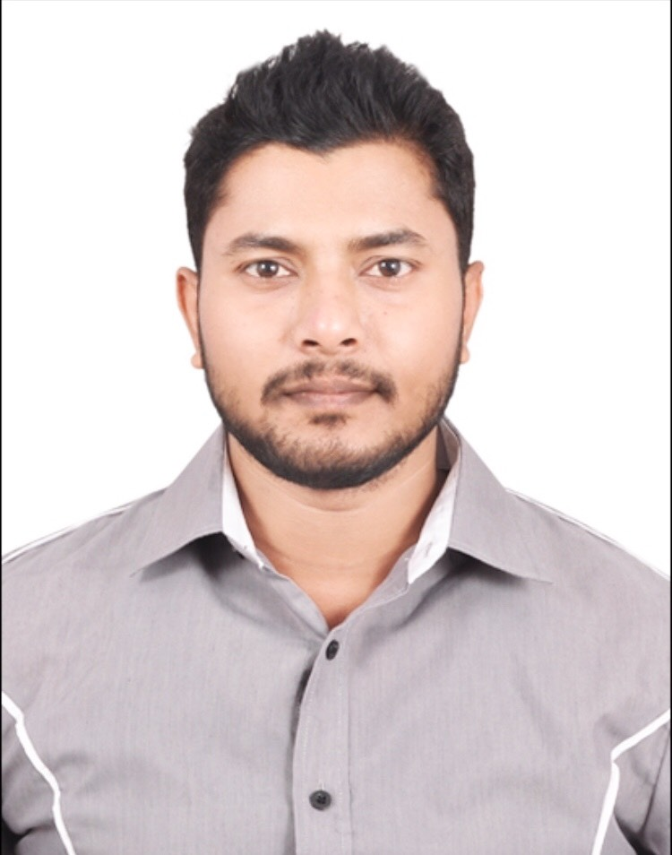

Kundan Madhwan

Summary
I am a hardworking and dedicated individal with experience in custoner service adminstration.
Education
- B.Tech. (ECE) from Sundargarh Engineering College, Sundargarh, BPUT, Odisha in 2012
- Postgraduate Project Management Certification Program, from IIM- Kozhikode 2023
Work Experience
- Project Manager - CrimsonLogic Pte. Ltd., Bangalore
Feb 2022 - Present
- Lead all aspects of projects, including capacity planning, resource allocation, project documentation, client engagement,
and change management.
- Address and resolve project risks, roadblocks, and obstacles while securing resources to efficiently complete deliverables.
- Mentored team members towards achieving their KPIs and helped them progress through in their careers.
- Digital Scrum Master - Danahar Corpoation, Bangalore
- Continuously exceed the OTD goals and maintaining > 90% say/do ratio sprint after sprint.
- Maintaining high quality deliverables with the lowest defect volume among the platform teams.
- Successfully delivered to the application to multiple clients with high quality and maturity.
- Technical Lead - Sutherland, Bangalore
- Guiding their team through technical issues and challenges.
- Collaborating with the team to identify and fix technical problems.
- POC’s for new requirements.
- Software Engineer - Evry India Pvt. Ltd., Bangalore
- Developed & implemented SOAP, Restful & Spring Service Interfaces.
- Implemented commands and their validations.
- Prepared & implemented Spring DAOs with hibernate components.
- Software Engineer - IBM, Bangalore
- Designed JSPs as per requirement.
- Implemented spring controllers and commands & their validations.
- Developed & implemented Spring Service Interfaces and Spring DAOs with Hibernate.
- Business Development Executive - Daygains Services, Bangalore
- Developed JSPs as per requirement.
- Conducted requirement analysis and developed business logic; executed unit & integration testing.
- Planned & implemented controller classes & configuration files using Spring Framework as well as UI pages using jQuery,
Ajax & Dojo.
Skills
- Operating System: Windows XP and Windows 10
- Languages: Java, J2EE, Apache Tomcat, JBoss, WebLogic, Jetty, Oracle, Spring Boot, REST, Micro services and Hibernate
- Tools: MS Project, JIRA, Eclipse, Gradle, Kafka, GIT, Docker, Kubernetes, AWS
- Agile Methodologies, Waterfall project management
Certifications
- Certified ScrumMaster® (CSM®) from Scrum Alliance®
- Certified Project Management Professional (PMP)® from Project Management Institute (PMI)®
Award & Recognitions
- Received Outstanding Performance Award at CrimsonLogic.
- Received Employee of the Year Award at Danaher Corporation.
- Received Hero Award at GE Healthcare.
- Received of Spot Award at EVRY India Pvt. Ltd.
- Received of Above & Beyond Award at IBM India Pvt. Ltd.
- Received Start Performer of the Month at DayGains Services.
Others